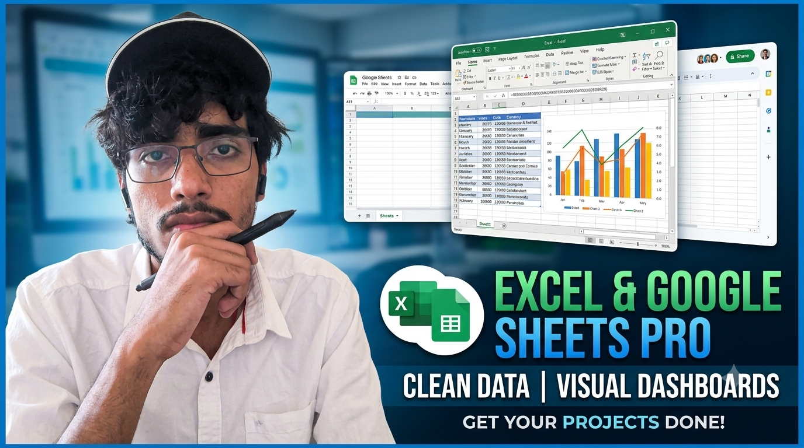
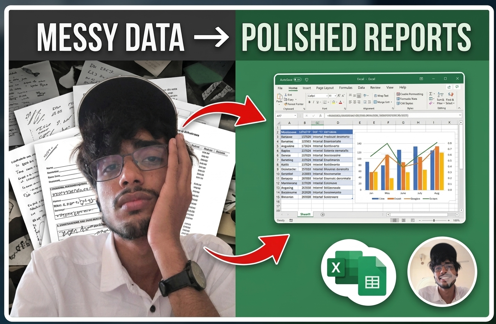

Data cleaning, dashboards, and analysis for businesses and researchers — built with Python, SQL and spreadsheet tools, delivered as something you can actually use.
I'm a BS in Data Science & Applications student at IIT Madras, working across freelance data projects and academic research. I help businesses and individuals turn messy spreadsheets and raw data into clean, actionable insight — dashboards, reports, and tools you can actually use to make decisions.
Alongside client work, I've done research internships in transportation systems (IIT BHU, Varanasi) and neuroscience (NIT Kurukshetra), so I'm as comfortable with messy real-world sensor data as I am with a small business's sales sheet.
I've also served as a Student Ambassador for Google India and eDC IIT Delhi — roles that had me communicating technical ideas to non-technical audiences, which shows up directly in how I write reports and dashboards for clients.
A self-serve Streamlit tool built for freelance clients who kept sending raw sensor/telemetry CSVs and needing quick, custom charts on turnaround.
Clients regularly needed quick visualizations from raw sensor/telemetry-style exports, but manually plotting each request in Excel or a one-off Python script was slow and repetitive. I built a reusable, self-serve tool clients can operate themselves — no waiting on me for every new chart.
@st.cache_data keeps it fast even on 50,000+ row filesTwo internships that shaped how I approach messy, real-world data — full write-ups landing here soon.
Research internship applying data analysis to transportation systems problems. The core challenge was raw, messy real-world data — it had to be shaped and cleaned into a usable structure before any analysis could even begin, the same discipline behind the GNSS/telemetry tool above.
Research internship applying analytical methods to neuroscience data — translating messy, unstructured signal data into a clean, analyzable form before drawing findings from it.
The service pages I run on freelance platforms — built to make the "messy data in, polished report out" promise clear at a glance.

